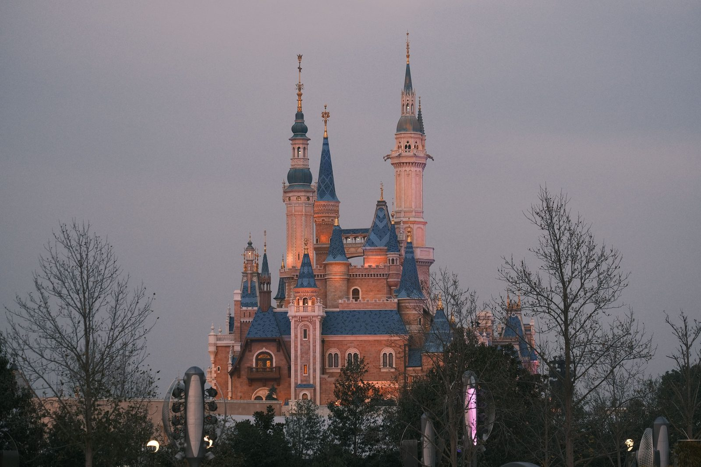
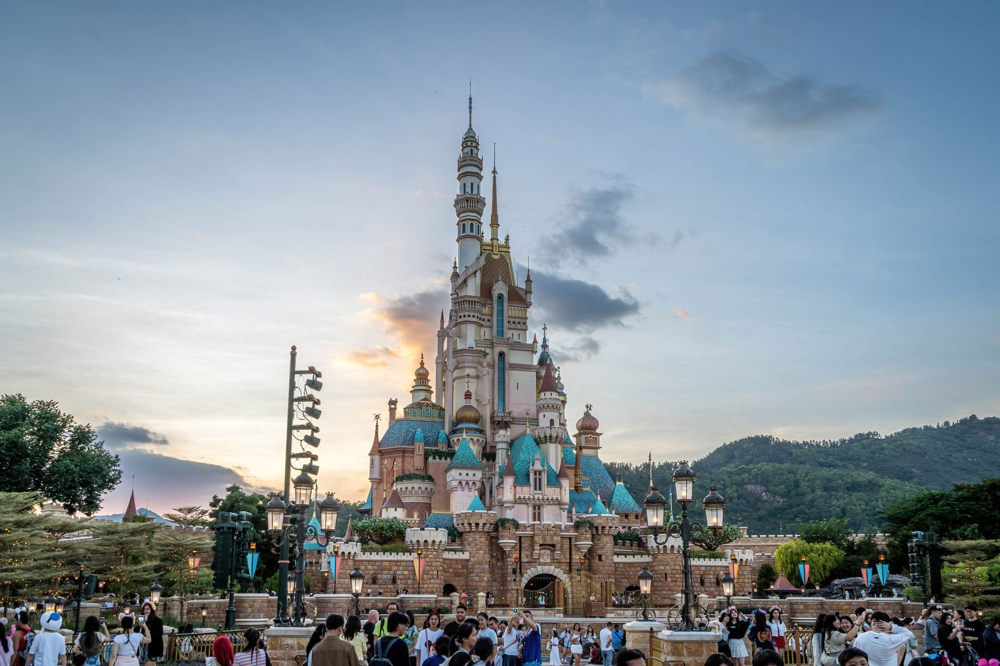

「中国にもディズニーランドがあるらしい」というのは知っていても、それ以外にどんなテーマパークがあるのかは意外と知られていません。実は中国には、上海ディズニーランド・北京ユニバーサルという世界最新クラスの国際ブランド施設から、東南アジア最大級とされる海洋テーマパーク「長隆」、独自コンテンツで勝負する「方特」、絶叫マシン特化型の「欢乐谷」、冬季限定で氷の建造物が並ぶ「ハルビン氷雪大世界」まで、規模もジャンルも異なる巨大テーマパークが林立しています。この記事では、日本人旅行者の視点から、それぞれの特徴・料金・向いている旅行者タイプを比較しました。
まずは全体比較表
料金は基本的に大人1日券の目安です(季節・曜日により変動する動的料金制のパークが多く、幅で表記しています)。円換算は1元=約23円、1香港ドル=約20円(いずれも2026年9月時点の目安)で計算した概算です。
| パーク名 | 所在地 | タイプ | 大人1日券の目安 |
|---|---|---|---|
| 上海ディズニーランド | 上海 | 国際ブランド | 475〜799元(約1.1万〜1.8万円) |
| 北京ユニバーサル | 北京 | 国際ブランド | 418〜748元(約9,600〜1.7万円) |
| 香港ディズニーランド | 香港 | 国際ブランド | 699〜939港ドル(約1.4万〜1.9万円) |
| 香港海洋公園 | 香港 | 老舗・海洋 | 498港ドル(約1.0万円) |
| 珠海長隆海洋王国 | 珠海 | 海洋・大型 | 395〜450元(約9,100〜1.0万円) |
| 広州長隆歓楽世界 | 広州 | 絶叫系・大型 | 250元(約5,750円) |
| 方特東方神画 | 厦門 | 文化×テクノロジー | 299元(約6,880円) |
| 方特夢幻王国 | 厦門 | 絶叫系 | 280元(約6,440円) |
| 北京歓楽谷(欢乐谷) | 北京ほか全国 | 絶叫系 | 299元〜(約6,880円〜) |
| ハルビン氷雪大世界 | ハルビン | 冬季限定・氷雪 | 約228〜328元(約5,240〜7,540円) |
| 深セン世界之窗 | 深セン | ミニチュア世界 | 220元(約5,060円) |
| 深セン錦繍中華・民俗村 | 深セン | ミニチュア・文化 | 220元(約5,060円) |
| 千古情シリーズ(宋城演芸) | 杭州・西安・桂林・張家界など | ライブショー型 | 140〜820元(約3,220円〜1.9万円) |
| 三亜アトランティス水世界 | 三亜 | リゾート型ウォーターパーク | 192元〜(約4,420円〜) |
| 横店影視城 | 東陽(浙江省) | 映画撮影所×テーマパーク | 290元〜(約6,670円〜、区画ごとに購入も可) |
上記は執筆時点で確認できた目安価格です。中国の主要テーマパークの多くは日付ごとに料金が変わる動的料金制(閑散日・普通日・繁忙日・特定日など)を採用しており、春節・国慶節などの大型連休期間は最高価格帯になるのが一般的です。実際の購入時は必ず公式サイト・公式アプリまたは携程(Trip.com)などの正規販売チャネルで最新価格を確認してください。
Trip.comでテーマパーク・アクティビティのチケットを探す
日本語・円建てで、本記事で紹介した各パークのチケットをまとめて検索・予約できます。レビューや当日価格も日本語で確認できるので、公式アプリの中国語表示に不安がある方にもおすすめです。
国際ブランド系:上海ディズニー・北京ユニバーサル・香港ディズニー
東京ディズニーリゾートやUSJに慣れている日本人旅行者にとって、まず気になるのがこの3施設でしょう。

- 上海ディズニーランド:2016年開業。中国本土初かつ唯一のディズニーパークで、「トロン:ライトサイクル・パワーラン」「カリブの海賊」など、東京にはないアトラクションが複数あります。パーク面積は東京ディズニーランドよりも広く、中国神話をモチーフにした「トレジャーコーブ」など中華文化を織り交ぜた独自エリアも見どころです。
- 北京ユニバーサルスタジオ:2021年開業と最も新しく、「ワイルドなジェットコースターの都」と呼ばれるほど絶叫系アトラクションの規模が大きいのが特徴。大阪USJと比べても、ハリー・ポッターエリアやミニオンズエリアの作り込みは引けを取らないとされています。
- 香港ディズニーランド:2005年開業でアジア最古のディズニーパーク。3つの中で最も規模がコンパクトなため、「初めてのディズニー」「滞在1〜2日で回り切りたい」という旅行者に向いています。2023年には世界初となる「アナと雪の女王」エリアがオープンしました。

3施設に共通する注意点として、チケットを持っていても入園には別途オンラインでの入園予約(日付指定)が必要な場合があります。特に大型連休中は予約枠が埋まりやすいため、渡航が決まった時点で早めに公式アプリまたは公式サイトから予約状況を確認しておくのがおすすめです。
長隆(Chimelong)系:珠海長隆海洋王国・広州長隆歓楽世界
広東省を拠点とする長隆グループは、東南アジア最大級ともいわれる巨大リゾート「長隆」を珠海・広州で展開しています。沖縄の美ら海水族館や大阪・海遊館のような水族館をイメージしている人には、スケールの違いに驚くはずです。
- 珠海長隆海洋王国:ジンベエザメやベルーガ(シロイルカ)を含む世界最大級の海洋生物展示に加え、絶叫系アトラクションも充実した複合型パーク。1日で回り切るのが難しいほどの規模で、園内にはホテルも併設されています。
- 広州長隆歓楽世界:海洋展示ではなく絶叫系アトラクション中心のパーク。近隣には長隆野生動物世界(サファリパーク)もあり、広州滞在中に合わせて訪れる旅行者も多いエリアです。
方特(Fantawild)系:厦門・方特東方神画/夢幻王国
方特は中国全土に20以上の拠点を持つ国内最大級のテーマパークチェーンですが、日本での知名度はまだ低いブランドです。特に厦門は「東方神画」(中国神話・伝説をテーマにした4D・VRアトラクション中心)と「夢幻王国」(絶叫系中心)という性格の異なる2つの方特パークが隣接しており、まとめて訪れやすいのが特徴です。ハリウッド的な世界観ではなく、中国の神話・伝説を独自の映像技術で体験させる方向性のパークで、"中国オリジナルのテーマパークとはどんなものか"を体感したい旅行者には新鮮な選択肢になります。
欢乐谷(Happy Valley)系:絶叫マシン中心の全国チェーン
欢乐谷は華僑城(OCT)グループが北京・上海・深セン・成都・武漢・天津など全国の主要都市で展開するチェーンで、ディズニーやユニバーサルのようなIP(原作コンテンツ)を前面に出さず、絶叫系アトラクションの物理的なスケールで勝負するタイプのパークです。市内からのアクセスが良く、ディズニー・ユニバーサルよりチケット代を抑えられる(北京欢乐谷は299元〜、約6,880円〜)のも魅力で、「ジェットコースター好きだが1日で丸々予算を使いたくない」という旅行者に向いています。口コミサイトでは成都欢乐谷の評価が特に高く、上海・深セン欢乐谷もそれぞれ独自のアトラクション構成で展開されているため、訪問予定の都市に欢乐谷があるかどうかもチェックしてみる価値があります。
個性派・体験型パーク
ハルビン氷雪大世界(冬季限定)
毎年12月〜2月頃のみ開催される、氷と雪だけで作られた巨大建造物群のテーマパークです。世界最大級の氷彫刻イベントとされ、夜間はライトアップされた氷の城や滑り台が幻想的な光景を作り出します。他のパークと違って冬しか営業していない点、氷点下20度前後になる極寒の中での観覧になる点が最大の注意点で、防寒装備が必須です。
香港海洋公園
1977年開業と香港ディズニーより歴史が古い老舗パーク。ケーブルカーで山の斜面を上り下りしながら、絶叫アトラクションとパンダ・イルカなどの動物展示を楽しめる構成です。香港ディズニーと比べて「絶叫マシン+動物園」という組み合わせが特徴で、ディズニーのようなキャラクター体験よりもアトラクション自体を楽しみたい人向けです。
深セン世界之窗・錦繍中華民俗村
どちらも実物を縮小したミニチュア建造物を展示する「ミニチュア世界」型のパークです。世界之窗はエッフェル塔やピラミッドなど世界の名所のミニチュア、錦繍中華民俗村は中国各地の名所・少数民族文化のミニチュアを集めています。栃木県の東武ワールドスクウェアをイメージすると分かりやすく、絶叫系よりものんびり見て回りたい旅行者や、家族連れ・年配の同行者がいる旅行に向いています。
千古情シリーズ(宋城演芸):三亜だけじゃない
「千古情」は、宋城演芸グループが手がける大型野外ライブショーを中心としたテーマパークのシリーズ名です。アトラクション体験というより、その土地の歴史・伝説を歌舞・アクロバットで描く大規模な「観劇」に近い体験のため、他のパークとは性格が大きく異なります。三亚千古情(海南島の歴史がテーマ)以外にも、発祥の地である杭州宋城をはじめ、西安・桂林・張家界・九寨溝・麗江など、当サイトでも紹介している主要観光都市の多くに、それぞれご当地の歴史・伝説をテーマにした千古情景区があります。旅行の目的地に千古情があれば、夜の予定として組み込んでみるのもおすすめです。桂林千古情は口コミサイトで特に高評価を集めています。
なお、西安には千古情のほかに、大唐(唐代)をテーマにした庭園型パーク「大唐芙蓉園」もあります。入場料は120元(約2,760円)、夜の公演「夢回大唐」込みのチケットは140元(約3,220円)で、盛唐の宮廷文化をテーマにした庭園・ライトアップを楽しめます。
アトランティス水世界(三亜)
三亚アトランティス水世界は高級リゾート「アトランティス・サンヤ」に併設されたウォーターパークで、巨大水族館を併設した滑り台・プールが中心。リゾートステイと組み合わせて楽しむタイプの施設です。
横店影視城:「中国のハリウッド」
浙江省・東陽市にある横店影視城は、世界最大級ともいわれる映画・ドラマ撮影用のセット群をそのまま観光地として開放したテーマパークです。「広州街・香港街」「秦王宮」「清明上河図」「明清宮苑」など、時代劇のロケでおなじみの巨大セットが複数の区画(景区)に分かれており、区画ごとにチケットを購入する方式(各120〜255元程度、約2,760円〜5,870円)か、複数区画を回れる連票(290元〜、約6,670円〜)を選べます。実際に撮影が行われている現場に遭遇することもあり、中国の時代劇・映画ファンには特に人気のスポットです。夜間は「梦幻谷」エリアで水上ショーなどの演出も行われています。
旅行者タイプ別おすすめ
- 「まずは間違いない体験がしたい」:上海ディズニーランドまたは北京ユニバーサル。どちらも上海・北京という主要都市からのアクセスが良く、日本語対応も比較的充実しています
- 「絶叫マシン重視、予算は抑えたい」:欢乐谷(各都市)または広州長隆歓楽世界・方特夢幻王国
- 「海洋生物・水族館が好き」:珠海長隆海洋王国。世界最大級の規模で、沖縄・大阪の水族館ファンなら一度は訪れる価値があります
- 「小さな子ども・年配の同行者がいる」:深セン世界之窗・錦繍中華民俗村、または香港ディズニーランド(規模がコンパクト)
- 「中国でしか体験できないものが見たい」:ハルビン氷雪大世界(冬季限定)、千古情シリーズ(ライブショー)、方特東方神画(中国神話モチーフ)
- 「中国の映画・時代劇が好き」:横店影視城。有名な時代劇のロケセットを実際に歩いて回れます
予約・チケット購入の注意点
- 入園予約は別枠:多くのパークで「チケット購入」と「入園日時予約」が別手続きです。特に上海ディズニー・北京ユニバーサルは大型連休中に予約枠が満席になることがあるため、日程が決まり次第、公式アプリで予約状況を確認しておきましょう
- 購入チャネル:公式サイト・公式アプリのほか、携程(Trip.com)・大衆点評などのプラットフォームでも購入できます。日本語対応があるTrip.comなど、言語面で不安がある場合は日本語対応のプラットフォームを使うのも一つの方法です
- 大型連休は避けるのが無難:春節・国慶節などの中国国内の大型連休と重なると、どのパークも大混雑かつ最高料金帯になります。連休を外した平日訪問がおすすめです
- 身分証明書の携帯:実名制のオンラインチケットが主流のため、購入時に使ったパスポート情報と、入園時に提示するパスポートが一致している必要があります
本記事の料金・アトラクション情報は執筆時点(2026年9月)の各パーク公式サイト・観光情報サイトの情報をもとにしています。料金体系は季節・曜日・キャンペーンにより頻繁に変動するため、訪問前に必ず公式サイトまたは購入チャネルで最新情報をご確認ください。また、文中の円換算は1元=約23円、1香港ドル=約20円(いずれも2026年9月時点の目安)で算出した概算です。
この記事の内容に古い情報や誤りを見つけた場合、あるいはご感想・ご質問がありましたら、お問い合わせまでお気軽にご連絡ください。